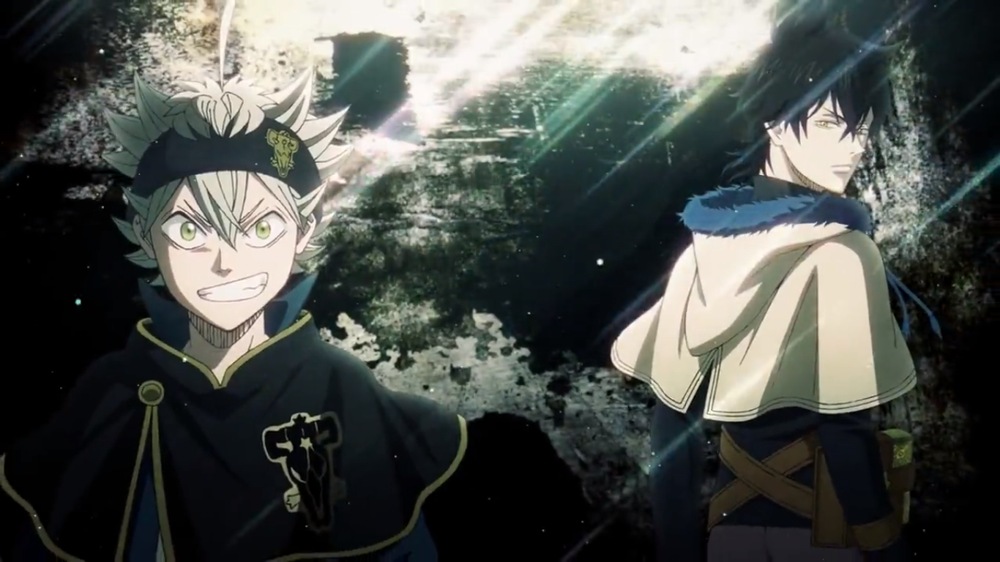
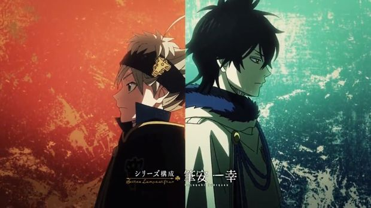

Black Clover é uma série de mangá shonen de fantasia escrita e ilustrada por Yūki Tabata.
Em um lugar onde todas as pessoas possuem poderes mágicos, a disputa para se tornar o mago mais poderoso é intensa, assim se tornando,
o Rei Mago. Quem alcança esse título torna-se também o líder dos Cavaleiros Mágicos, força militar do Reino Clover.
Todos os Cavaleiros podem disputar este título, já que o único requisito para alcançá-lo é o seu mérito. Com isto em mente,
dois órfãos, Asta e Yuno, dedicam suas vidas a alcançar o posto de Rei Mago. Abandonados quando crianças na porta de uma
igreja, os dois querem provar a si mesmos e ao mundo que são capazes de ocupar o posto mais importante do reino.
Enquanto Yuno é um talento nato da magia, com poderes incríveis e muita facilidade para controlá-los, Asta é o único ser
humano que não possui habilidades mágicas nem mana. Por outro lado, o rapaz possui muita força física e domina a Anti-Mágia,
uma técnica capaz de anular efeitos mágicos.
Asta x Yuno


Abandonados quando crianças na frente de uma igreja, Asta foi criado num orfanato em Hage, numa região esquecida de Clover.
Não demorou para que ele percebesse o mau tratamento que os nobres do reino davam às pessoas comuns do local onde ele cresceu,
fato que o incitou desde cedo a querer ser o Rei Mago. Desde pequeno, ele e Yuno sempre foram muito próximos, passando horas
treinando juntos. No entanto, ele logo percebeu que era incapaz de dominar magia, o que o fez ser reprovado na Cerimônia de
Aceitação do Grimório. No entanto, seu destino viria a mudar no mesmo dia! Seu colega Yuno foi atacado por Revchi, um
feiticeiro. Mesmo sem poderes mágicos, Asta tenta defender seu amigo do ataque. Encurralado, o jovem se vê sem muitas opções,
quando, um grimório vem em sua direção e lhe dá uma espada, que o faz derrotar seu oponente. Aos poucos, Asta começa a perceber
que sua falta de habilidade mágica pode se tornar seu ponto forte e passa a usar isto a seu favor, desenvolvendo um estilo de
luta único capaz de anular a magia dos seus rivais. Isso, aliado a sua força física impressionante, fazem dele um candidato
interessante ao título de Rei Mago.